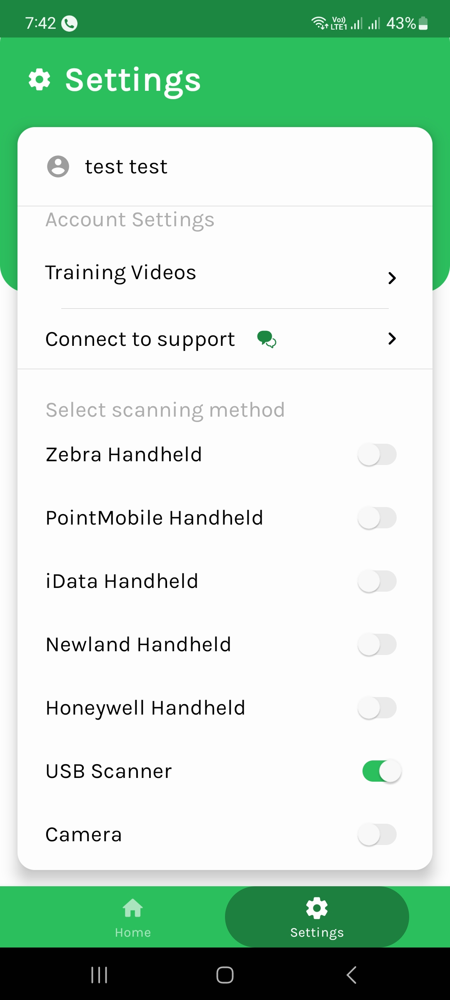

USB Scanner Integration Tutorial
Open EasyEcom App Settings select USB Scanner
Attach USB scanner to your android phone with OTG
Once Scanner is connected to mobile allow permission to handle scanner
On Allowing Barcode terminal will get open scan any sample barcode just to ensure it is working fine
The USB Scanner is Integrated to EasyEcom ap now you can use it